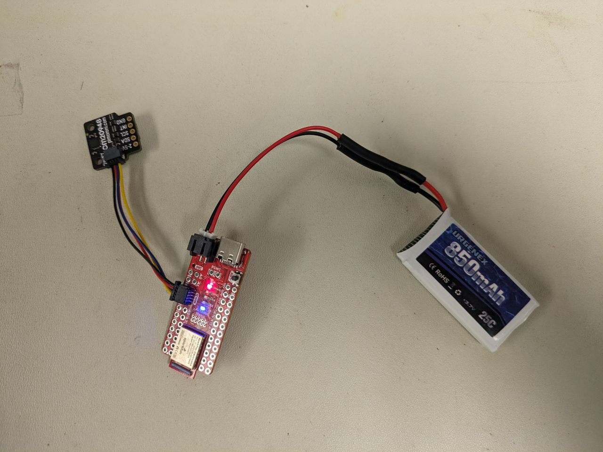

Objective
The aim of this lab is to integrate two Time of Flight (TOF) sensors with the Artemis board and to thoroughly assess the performance and capabilities of these sensors. It is also essential to carefully plan the wire length and component placement on the robot for soldering.
Prelab
At the end of this lab, a total of three sensors, including one IMU and two TOF sensors, will have been integrated with
the Artemis board via I2C communication. The sketch of the wiring diagram is shown below, using a
QWIIC multiport to make the
connections cleaner. The two motors aside will be connected to the Artemis in the next lab. The diagram also indicates the
color scheme for the I2C wiring corresponding to the QWIIC cable colors.

According to the datasheet, the default I2C address of the IMU is b110100X, with the LSB determined by the logic level on pin AD0.
The default I2C address of the TOF sensor is 0x52. In this lab, two TOF sensors are simultaneously used, so it's necessary to utilize
the feature of their XSHUT pins. As noted in the wiring diagram, with one of the TOF sensor's XSHUT pin being controlled by the Artemis, this sensor
can be set to Hardware Standby mode during setup by controlling the logic level of the XSHUT pin. Then, the I2C address of the other TOF sensor can be changed,
resulting in the two sensors communicating on the same I2C bus without address conflicts. Another method, which does not require the use of XSHUT pins, is to directly connect the two TOF sensors to different
I2C buses on the Artemis.
The plan for sensor placement is to position the IMU horizontally on the roof or bottom of the robot, while placing
the two TOF sensors at the front and side of the robot, respectively. Positioning the two TOF sensors in different directions
can expand the robot's perception dimensions; however, the reliability of this approach may be lower than obtaining readings from both TOF sensors simultaneously detecting the
same direction and combining the results.
Lab Tasks
Soldering
In this lab, it is tested to power up the Artemis with a battery instead of the USB-C port to prepare for wireless control.
As shown in the figure below, the battery wires were soldered to the JST jumper wires. The lit blue LED indicates successful
powering of the Artemis, and the Bluetooth connection and message transmission were tested using codes from previous labs.

Below is the picture of the IMU and ToF sensors connected to the QWIIC breakoud board and the Artemis. The wires were twisted
together to improve electromagnetic interference (EMI).

I2C Connection
Examples->Apollo3->Example05_Wire_I2C was used to scan the I2C address of a single ToF sensor and the result is shown below.
Note that the detected I2C address is 0x29, which differs from the 0x52 noted in the datasheet. The reason for this is that the
Pololu breakout board is configured to set the sensor's 7-bit slave address to 0101001b by default on power-up. The first seven
bits correspond exactly to 0x29 in binary. When a 0 representing write is padded at the end, it becomes 01010010, which is the 0x52
indicated in the sensor datasheet.
Mode Choice
According to the datasheet, the TOF sensor VL53L1X offers two distance measurement modes: short-distance mode, with a maximum
measurement distance of 1.3m but better ambient immunity, and long-distance mode, which has a greater maximum
measurement distance of 4m. These two modules can be manually set during setup using the functions setDistanceModeShort()
and setDistanceModeShort().
To test the performance of the two modes, the two TOF sensors were set to different modes and placed at the same distance from
obstacles (the setup for both sensors working simultaneously will be discussed in the next section). The readings were then compared
with the actual distance. The following figures show the sensors placed on a table facing the ground, with the table's height from
the ground being approximately 100.6 cm, and the result readings from the sensors.
Using a similar setup but varying the distance of the sensors to the obstacle and taking the average of 100 readings, a set of data
of distance measurements with both modes was collected, as shown in the figure below:
Based on the existing data points, the errors for both modes are not significant
within 1.3 meters. Since it's currently unclear what environment the robot will primarily operate in and what commands
it will need to execute in future labs, the sensor ranging mode has not been decided yet. If the robot frequently
operates in open spaces, long-distance mode would be more suitable; if it operates in narrow areas, short-distance mode
would be preferable.
2 ToF Sensors
The lab requires two ToF sensors to work in parallel. The following code was applied to address the issue of the
shared initial I2C address mentioned earlier. The XSHUT pin is first set to low, which puts the corresponding TOF sensor
into Hardware Standby mode; the I2C address of the other TOF sensor is then changed to 0x30. Finally, the XSHUT pin is
set to high, allowing both ToF sensors to function simultaneously on the same I2C bus but with different addresses.
ToF Sensor Speed
To test the upper limit of the code's loop execution speed, the TOF code was simplified as shown below. It only starts
ranging in the setup, instead of starting, clearing interrupts, and stopping ranging in each loop iteration. This may
lead to less precise sensor readings, but in practice, the effect was found to be acceptable.
It can be observed that each loop takes approximately 9 to 10 milliseconds. Although this includes the time for Serial
printing, the I2C communication between Artemis and the sensor should still be the limiting factor in speed.
ToF Data Transmission via BLE
The functionality of transferring TOF data via BLE was tested. The received data was parsed on the Python end and
plotted using matplotlib for future data analysis. The pseudo code snippet is shown below. Similar to lab2, the data from the
two TOF sensors, along with their corresponding timestamps, start to be stored in arrays after receiving the START_RECORD command.
The stored values can be sent via BLE using the GET_RECORDED_DISTANCES command.
On the Python end, a notification handler is defined to receive the published BLE messages and parse the data into arrays, as shown in the
following picture.
The received data from the two ToF sensors is plotted in the figure below. The measurement scenario is two sensors approaching an obstacle
from parallel positions. The larger disturbances in the short-distance mode data might be due to human measuring errors.

Additional Task: Prons/Cons of Other Distance Sensors
There are other available distance sensors that are based on infrared transmission. The most common ones are amplitude-based and triangulation-based sensors.
The former works by emitting light from an infrared LED, which is then conducted to the target obstacle and reflected back. The
sensor detects the reflected light using a photodiode and calculates the distance with the signal amplitude. This kind of
sensors typically work at relatively short distances, within 0.5m or even closer, and are at very low cost. However, they
may not guarantee measurement accuracy in strong ambient light and can be affected by the reflectivity of the target obstacle.
Triangulation-based sensors, on the other hand, reconstruct distance information by measuring the angle of the object's
reflected light. They working range is larger, usually between 0.05 to 1m. The advantage of these sensors is their
insensitivity to the surface color, texture, and ambient light of the object being measured. However, they are more
expensive, typically around a dozen US dollars, and are larger in size, with a lower sampling rate compared to
amplitude-based sensors.
Additional Task: ToF Sensitivity to Colors and Textures
To test the sensitivity and measurement accuracy of the TOF sensor to obstacles of different colors and textures, five
different obstacles were used for testing. The results, shown in the figure below, are the average of one hundred
readings for each test. It can be observed that there are no significant differences in the readings, indicating
that the TOF sensor might not be sensitive to color and texture. However, this conclusion is tentative,
as the limited variety of test samples may have influenced the results.

Discussion & Conclusion
In this lab, I consolidated my understanding of I2C communication and gained insights into different ranging sensors.
One thing that can be improved for this lab is that, due to time constraints and the complexity of testing environment setup,
I did not collect enough data points to thoroughly analyze the accuracy of the TOF sensor. It would be better to have denser data points
and some error analysis.
References
Lab tutorials
Artemis Nano Schematics
TOF Datasheet
TOF Carieer Board Description
TOF Carieer Board Description